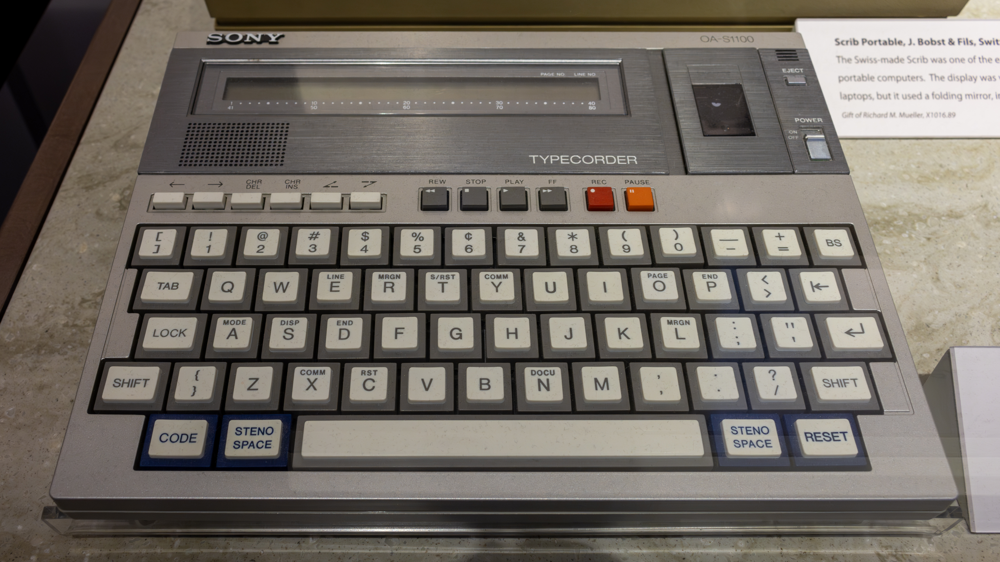
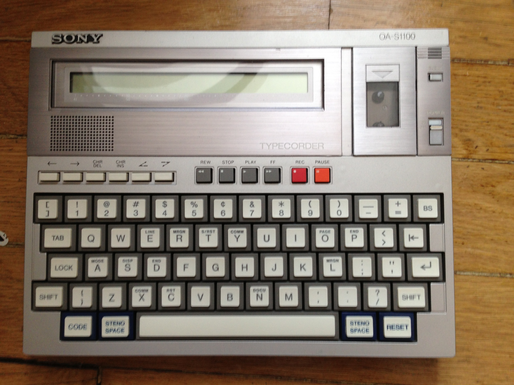
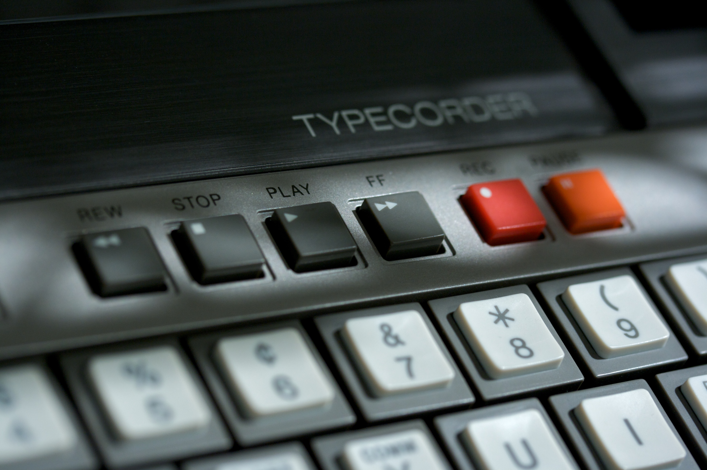

Sony Typecorder
A three-pound typewriter that stored up to 120 pages of text on a microcassette — and could fax it over a phone line

Overview
The Sony Typecorder, announced 17 December 1980 in New York and marketed from mid-1981 at around $1,400, was Sony's first move into office automation: a three-pound machine the size of a briefcase (about 8 x 11 x 1 inches) with a standard QWERTY keyboard, a single-line 40-character liquid crystal display, and — the defining oddity — no other output at all. Words typed on the keyboard were written as digital data onto a standard magnetic microcassette. Sony claimed a cassette could hold up to 120 standard pages of typing. Because the storage was an ordinary audio cassette, the machine doubled as a dictation and meeting recorder: in another mode the same tape that holds your document holds your voice.
The Typecorder's interaction model is a chain of physical transfers. Once text was captured on the cassette, Sony's ecosystem moved it around by hand and by wire: print it on paper, process it on the companion Series 35 word processor (around $9,000, featuring newly developed 3.5-inch microfloppy drives that Sony also offered to other manufacturers on an OEM basis), retype it on conventional electric typewriters, punch it out as telex tape, or transmit it over telephone lines to a central office through an acoustic coupler. Chairman Akio Morita pitched the machine at 'businessmen, journalists, lawyers, professors — anyone who depends on efficient typing,' and at travelers working on airplanes and trains.
The Typecorder quietly prefigured the portable text-capture appliance: the typewriter-recorder hybrid, cassette-as-storage, and the acoustic-coupler upload ritual would all feel familiar a decade later in portable computers and personal digital assistants. It was not a commercial success — dedicated word processors and cheap portable computers swallowed the niche — but as an interface concept it is remarkable for making the physical medium, not the screen, the heart of the system. A 1980 unit is preserved in the Computer History Museum, and the US model OA-S1100 survives in photographs.
Deep dive
Sony stored text as digital signals on ordinary microcassettes, the same tape stock as its dictation machines — up to 120 standard pages per cassette. The marriage of a typewriter and a tape recorder in one chassis means the same medium holds documents and voice, and the machine is a meeting recorder when it is not a word processor. No hard disk, no floppy in the base unit; the removable magnetic tape is the memory.
There is no printer in the Typecorder and no network jack. Text leaves the machine by a chain of physical rituals: hand the cassette to a companion processor, punch it to telex tape, or place a telephone handset into an acoustic coupler and dial — the same coupler ritual as the museum's Novation CAT. The device turns writing into an object that is carried, plugged, and dialed.
Announced the same week in December 1980, the Typecorder and the Series 35 word processor marked Sony's entry into office automation, with 3.5-inch microfloppy drives that Sony touted as the highest-density floppy format of the era. The Typecorder anticipated by a decade the idea of the portable text appliance that syncs through a cradle or a phone line — the shape of the Psion, the Palm, and the BlackBerry.
Team & pioneers
- Sony Corporation. Designer and manufacturer; Office Products Division created to sell the line.
- Akio Morita. Sony chairman; publicly pitched the Typecorder at journalists, lawyers, and traveling professionals.
- Computer History Museum. Preserves a 1980 Typecorder unit.
Media

